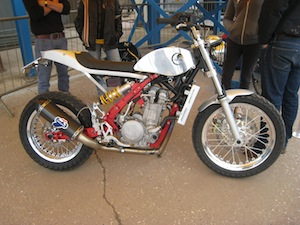
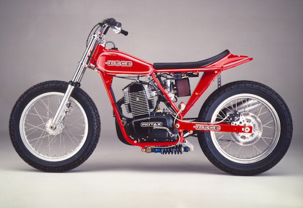
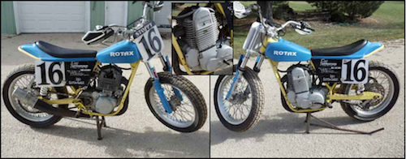
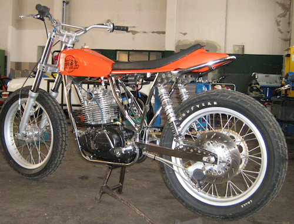
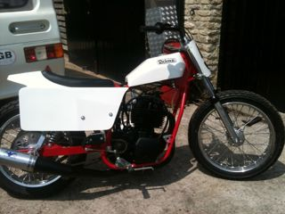

What's this all about?
During the period whilst we were travelling and I was bikeless I started thinking about bikes and how, as a guy who cut his teeth on a Gold Star, bikes had become heavy, overgrown, unwieldy and all of that. I started thinking of the minimal bike and trawled the web for ideas and in March 2011 stumbled upon Sideburn magazine.
Sideburn is a magazine created by a group of enthusiasts of the flat track scene trying to create a presence for Dirt Track/Flat track in the UK. The sort of bikes featured on the pages of Sideburn inspired me to consider building such a machine but I had no idea where to start or what the foundations would be. However the desire had been created and now I had to find a way to fulfil it.
dateline September 2012
Issue 11 of Sideburn and suddenly I was in love........with the Zaeta........this was the sort of bike that I needed...grass roots, engine, chassis, wheels what else do you need? The problem is we were in Thailand and I could not progress it further at that time.
dateline June 2013Back in our own home again in West Berkshire I was still dithering about what bike to get, swinging from the Aprilia Tuono to Triumph Scrambler to KTM 690 or 390. Then we went off travelling again for six weeks, with summer approaching it was time to make a decision. Suddenly the Zaeta popped up again on Facebook and I got in touch with Paolo Chiaia to see what was happening. To cut a a long story short, having hardly got over the jet lag from San Francisco I was heading across country with my friend Paul to meet Paolo at DirtQuake 2. I had this idea that maybe I could buy a Zaeta in component form and thus save some of the cost. DirtQuake 2 was awesome and we saw so many amazing bikes and enthusiastic folks, sadly, due to a family engagement, we had to leave before the end but the hunger had returned for a streetable tracker. Sadly, as it emerged, it was not destined to be the Zaeta, I did not have the 10KEuro asking price or even half of it.
So back to the drawing board and a pivotal telephone call to Anthony Brown at Co-Built (one of the names I had seen at DirtQuake). Much to my dismay Anthony explained that Co-Built were no longer in the chassis business but only complete bikes but suggested trying to find a Wood chassis from USA. He suggested a couple of influential web sites such as vft.org and flattrack.com to commence my search.
Although I did not know it at the time, this is a Wood Rotax (late with monoshock). Isn't it the most perfect thing you have ever seen? This pic was kindly provided by Elliott much later to try and help me identify a Wood Rotax when I saw one. 
Hardly had I commenced looking on the For Sale and Wanted of vft when this little beauty popped up in Wisconsin, bear in mind here that I knew absolutely nothing about the Wood Rotax, only that it looked the perfect bike for me.
Pretty soon I had contacted the owner and also the amazingly helpful 'Elliott' at Ron Wood Racing in California who agreed to provide provenance for the bike if I needed to register it in the UK. The days ticked by slowly while I waited for a number of shipping quotes to come in. Then huge disappointment as each one went well over $2000 and that was without the 26% import and VAT..almost doubling the cost of the bike, another budget buster!!
dateline July 2013So how was I going to get this bike? Then I had an idea, why not put in 'Wanted' ads in vft, flattrack and shorttrackuk.com for a Wood Rotax chassis and see what response I got? Well I did not have to wait long, over a couple of weeks I had a number of responses from complete bikes, chassis that definitely were not Wood (thanks again to Elliott for checking out the photos for me). Probably the nicest one was this one from Germany. Unfortunately the owner wants rather a lot of money which would stretch the budget to the limit. We are stil trying to find a win win deal on this one.
I also got a mail from an Australian who had seen one in Stroud. So the next day I went off down the Rickman emporium and found this. Sadly, not a Wood but a Knight, lovely machine and brand new but not what I was looking for and too much money to boot!!
I have another story to tell which will round out the July dateline. More of this later as I expect it to conclude this week.